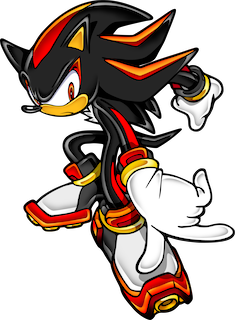
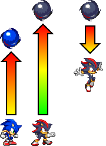
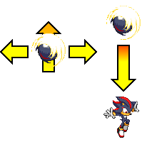
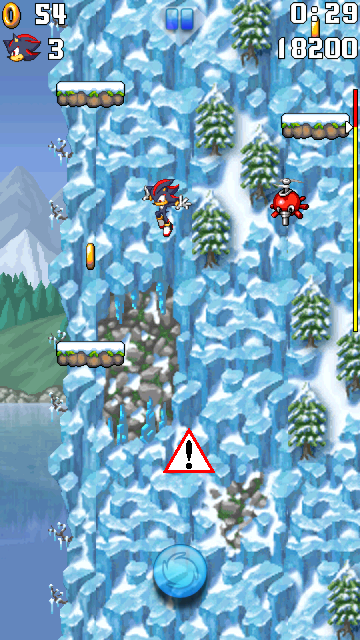
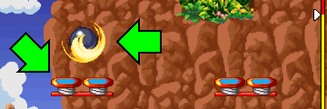
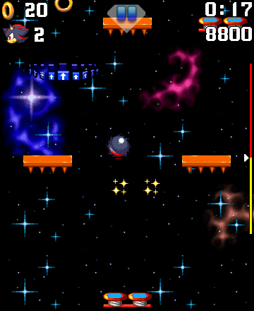
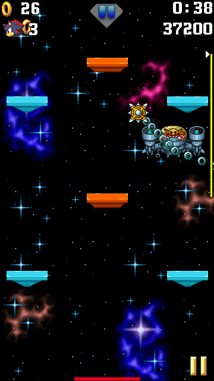

Shadow the Hedgehog
Character Description

BIOGRAPHY:
Shadow the Hedgehog, known as the Ultimate Lifeform created by Professor Gerald Robotnik, is a very powerful hedgehog with incredible skills and have no fear taking risks.
BRIEF GAMEPLAY DESCRIPTION:
In Sonic Jump Revival, Shadow is an additional playable character.
Shadow is offering a faster, yet harder gameplay experience, making him an interesting character to play as for experts.
Unlocking Shadow*
Shadow can be unlocked after clearing Bonus Zone Act 3.
Shadow doesn't play a role in the story, but he does have his own story campaign.
Check out the Shadow Story for more information.
* In the beta version of Sonic Jump Revival, Shadow is available to play from the start.
Abilities
Normal jump

Shadow has a higher jump height and a normal falling speed.
Super Jump (Spin Attack)

Shadow's Super Jump is the Spin Attack.
This ability allows him to perform a very small double jump and fall off quickly after using it.
You can make Shadow move left or right while using the Spin Attack.
Gameplay Tips
Jumping on platforms quicker
Since Shadow is jumping higher than Sonic, you have to prioritize higher platforms than usual to get up faster.
If you land on a higher platform correctly, Shadow will jump from platforms to platforms even quicker.
Beware of your heights

Be careful when you jump too high. Because the platforms below Shadow may not be accessible at a certain height.
Make sure to move Shadow quickly to the next platform before he falls.
Double jump to land faster
Shadow's double jump makes him fall faster, meaning that he can also land on platforms faster.
When you are about to land on another platform you want to jump from, perform a double jump at the right time to land faster on it.

The best example of this are the spring platforms in Green Hill Zone Act 1.
As Sonic, you can land and jump quicker. But as Shadow, he takes time to land on each spring platform.
However, by performing double jumps at the right time, Shadow takes less time to use these spring platforms.
Lesser reaction time

Because of Shadow's faster agility, you have less time reacting to the obstacles above.
Therefore, it is recommended for beginners to play as Sonic first and learn the layout of each stage.
During boss battles

Shadow jumps so high he can reach Dr. Eggman's height easily during some battles, but it is more difficult to avoid the obstacles and land yourself to jump and attack Dr. Eggman.
If you perform the double jump at the lowest point as possible of the jump, you can make a smaller jump if you want to stay around the same height and prevent yourself from jumping too high on the area.
If you want to defeat Dr. Eggman as Shadow, you need faster reaction and good use of the double jump ability.